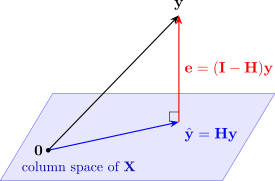

3.4 Fitted values, residuals and the hat matrix
The fitted values are \(\hat {\mathbf {y}} = \mathbf {X}\hat {\boldsymbol \beta } = \mathbf {X}(\mathbf {X}^\top \mathbf {X})^{-1}\mathbf {X}^\top \mathbf {y}\), and the residuals are \(\mathbf {e} = \mathbf {y} - \hat {\mathbf {y}}\).
Definition 3.4.1. The hat matrix is the \(n \times n\) matrix \(\mathbf {H} = \mathbf {X}(\mathbf {X}^\top \mathbf {X})^{-1}\mathbf {X}^\top \). It “puts the hat on \(\mathbf {y}\)”: \(\hat {\mathbf {y}} = \mathbf {Hy}\) and \(\mathbf {e} = (\mathbf {I} - \mathbf {H})\mathbf {y}\). Its diagonal entries \(h_{ii}\) are called the leverages.
- (i)
- \(\mathbf {H}\) and \(\mathbf {I} - \mathbf {H}\) are symmetric and idempotent: \(\mathbf {H}^2 = \mathbf {H}\) and \((\mathbf {I} - \mathbf {H})^2 = \mathbf {I} - \mathbf {H}\).
- (ii)
- \(\mathbf {HX} = \mathbf {X}\) and \((\mathbf {I} - \mathbf {H})\mathbf {X} = \mathbf {0}\).
- (iii)
- \(\mathbf {X}^\top \mathbf {e} = \mathbf {0}\) and \(\hat {\mathbf {y}}^\top \mathbf {e} = 0\).
- (iv)
- \(\operatorname {tr}(\mathbf {H}) = p\) and \(\operatorname {tr}(\mathbf {I} - \mathbf {H}) = n - p\).
- (v)
- \(0 \le h_{ii} \le 1\) for every \(i\).
Proof. Write \(\mathbf {C} = (\mathbf {X}^\top \mathbf {X})^{-1}\), which is symmetric because \(\mathbf {X}^\top \mathbf {X}\) is.
(i) \(\mathbf {H}^\top = \mathbf {X}\mathbf {C}^\top \mathbf {X}^\top = \mathbf {H}\), and \(\mathbf {H}^2 = \mathbf {X}\mathbf {C}(\mathbf {X}^\top \mathbf {X})\mathbf {C}\mathbf {X}^\top = \mathbf {X}\mathbf {C}\mathbf {X}^\top = \mathbf {H}\). Then \((\mathbf {I} - \mathbf {H})^2 = \mathbf {I} - 2\mathbf {H} + \mathbf {H}^2 = \mathbf {I} - \mathbf {H}\).
(ii) \(\mathbf {HX} = \mathbf {X}\mathbf {C}(\mathbf {X}^\top \mathbf {X}) = \mathbf {X}\), so \((\mathbf {I} - \mathbf {H})\mathbf {X} = \mathbf {X} - \mathbf {X} = \mathbf {0}\).
(iii) \(\mathbf {X}^\top \mathbf {e} = \mathbf {X}^\top (\mathbf {I} - \mathbf {H})\mathbf {y} = \bigl ((\mathbf {I} - \mathbf {H})\mathbf {X}\bigr )^\top \mathbf {y} = \mathbf {0}\) by (ii) and symmetry. Then \(\hat {\mathbf {y}}^\top \mathbf {e} = \hat {\boldsymbol \beta }^\top \mathbf {X}^\top \mathbf {e} = 0\).
(iv) By Lemma 3.1.1, \(\operatorname {tr}(\mathbf {H}) = \operatorname {tr}\bigl (\mathbf {X}\mathbf {C}\mathbf {X}^\top \bigr ) = \operatorname {tr}\bigl (\mathbf {C}\mathbf {X}^\top \mathbf {X}\bigr ) = \operatorname {tr}(\mathbf {I}_p) = p\), and \(\operatorname {tr}(\mathbf {I}_n - \mathbf {H}) = n - p\).
(v) By (i), \(h_{ii} = (\mathbf {H}^2)_{ii} = \sum _j h_{ij}h_{ji} = \sum _j h_{ij}^2 = h_{ii}^2 + \sum _{j \neq i} h_{ij}^2\). So \(h_{ii} \ge h_{ii}^2 \ge 0\), and \(h_{ii} \ge h_{ii}^2\) gives \(h_{ii} \le 1\). □
Part (iii) contains the residual identities of Theorem 2.3.1. Row \(0\) of \(\mathbf {X}^\top \mathbf {e} = \mathbf {0}\) is \(\sum e_i = 0\), because the first column of \(\mathbf {X}\) is all ones, and row \(j\) is \(\sum x_{ij} e_i = 0\). Part (v) will matter in the section on influential observations: a point with \(h_{ii}\) near \(1\) pulls the fitted surface almost through itself.
Remark (Geometry of least squares). The vectors \(\mathbf {X}\boldsymbol \beta \), for all possible \(\boldsymbol \beta \), form a \(p\)-dimensional subspace of \(\mathbb {R}^n\), the column space of \(\mathbf {X}\). Least squares picks the point \(\hat {\mathbf {y}}\) of that subspace closest to \(\mathbf {y}\), and part (iii) says the residual vector \(\mathbf {e}\) is perpendicular to the subspace. So \(\hat {\mathbf {y}} = \mathbf {Hy}\) is the orthogonal projection of \(\mathbf {y}\) onto the column space, and \(\mathbf {H}\) is the matrix of that projection (Figure 6). Projecting twice is the same as projecting once, which is why \(\mathbf {H}^2 = \mathbf {H}\).

Example 3.4.3. Find the fitted values and residuals for the crop data and check \(\mathbf {X}^\top \mathbf {e} = \mathbf {0}\).
Solution. From \(\hat y = 3 + 2x_1 + x_2\):
| Plot | 1 | 2 | 3 | 4 | 5 | 6 |
| \(y_i\) | 6 | 9 | 11 | 10 | 15 | 18 |
| \(\hat y_i\) | 7 | 8 | 10 | 11 | 15 | 18 |
| \(e_i\) | \(-1\) | \(1\) | \(1\) | \(-1\) | \(0\) | \(0\) |
The three rows of \(\mathbf {X}^\top \mathbf {e}\) are \begin {align*} \textstyle \sum e_i &= -1 + 1 + 1 - 1 + 0 + 0 = 0, \\ \textstyle \sum x_{i1} e_i &= -1 + 2 + 2 - 3 + 0 + 0 = 0, \\ \textstyle \sum x_{i2} e_i &= -2 + 1 + 3 - 2 + 0 + 0 = 0 . \end {align*}
The leverages \(h_{ii} = \mathbf {x}_i^\top (\mathbf {X}^\top \mathbf {X})^{-1}\mathbf {x}_i\), where \(\mathbf {x}_i^\top \) is the \(i\)th row of \(\mathbf {X}\), work out as \[ 0.421, \quad 0.587, \quad 0.397, \quad 0.230, \quad 0.587, \quad 0.778 . \] They lie between \(0\) and \(1\) and add up to \(3 = p\), as Theorem 3.4.2 requires. Plot 6, with by far the most fertiliser, has the largest leverage.
Questions on this section
Stuck on something here? Ask below and it stays attached to this topic.